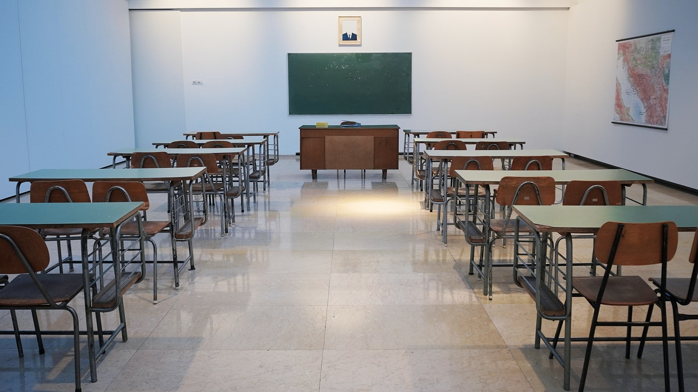
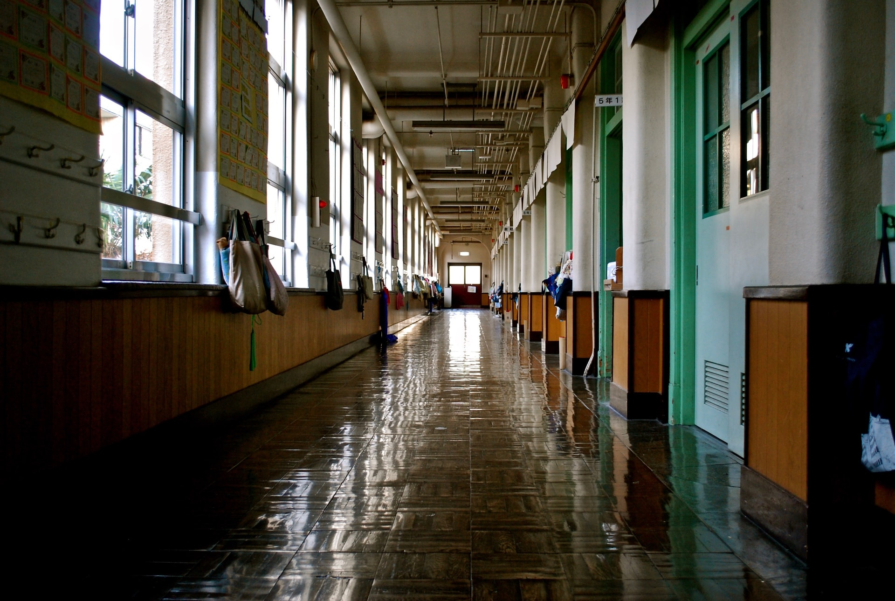

El Instituto San José pertenece a los “Siervos de la Caridad” de la Obra Don Guanella, se encuentra emplazado en Liniers desde el año 1929.Las bases principales del sistema educativo se encuentran en el “Documento base para proyectos educativos guanellianos”, del cual se desprende el presente Proyecto Educativo Institucional (PEI). San Luis Guanella ya pensó en la educación desde el inicio de su actividad fundadora. Lo tomó de Don Bosco, pero acuñando su sello empujado por situaciones e instituciones que eran particularmente distintas. Al igual que Don Bosco, lo llamó "sistema preventivo", y lo considera el núcleo central y el principio integrador, el alma de su actividad educativa. Durante los casi cuarenta años que dedicó a su obra, lo aplicó con denodado esfuerzo e hizo que se aplicase con diligencia. Lo fue adaptando y enriqueciendo con esquemas programadores que nos ha dejado puntualmente en sus Reglamentos. Exhortó insistentemente a sus seguidores, para que no se descuiden en el estudio y formación, porque en ellos veía una respuesta a los tiempos nuevos, la posibilidad de conocer los nuevos hallazgos pedagógicos y las necesidades emergentes. Escribía literalmente: «...La educación es un tema delicadisimo al que se presta desgraciadamente poca atención.
Un libro que recogiese los métodos y el desarrollo del sistema preventivo sería un tesoro para nuestras casas, y nos haría un gran bien...»
El "Sistema preventivo" es el corazón del Documento base para proyectos educativos guanellianos y en tal sentido presente no como una experiencia cerrada y rígida, sino como una fuerza que inspira la manera de concebir la educación, la relación educativa, las personas y la acción de los educadores, al mismo educando, que debe ser ayudado para que utilice sus cualidades escondidas para realizarse como ser humano.Las aportaciones de las ciencias de la educación y especialmente las indicaciones pastorales que la Iglesia, ha ido madurando a lo largo del tiempo constituyendo una parte viva e innovadora del Documento. El Documento se hace eco del momento histórico en el que estamos llamados a trabajar, como así sucede desde hace más de una década, lo que se ha dado en llamar "Nueva Evangelización". La educación hace que la evangelización sea real cuando se busca la salvación integral de todo el hombre, liberado de los múltiples condicionamientos de pobreza y de abandono, de servilismos sociales y culturales, liberación del pecado, creciendo en Cristo hasta alcanzar la santidad.Por su parte, los educadores son evangelizadores si encarnan un amor que se da gratuitamente, inspirado en el amor de Dios, que con su Providencia previene a cada criatura: con su presencia la acompaña y, con su vida, la salva. No se puede dejar de subrayar, la confianza sin límites que el Documento deposita en el trabajo educativo en general y en el sistema preventivo en particular, que se ha revelado en la tradición cristiana como una de las mejores expresiones del precepto evangélico del amor.
Podes descargar nuestro Proyecto completo:
Nivel Inicial

Nivel Primario
Nivel Secundario